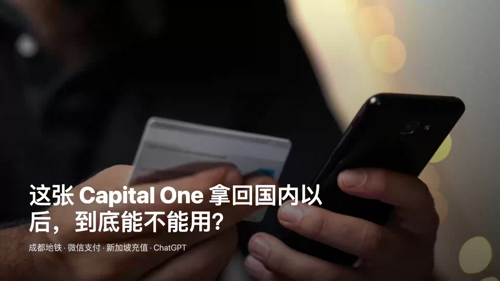
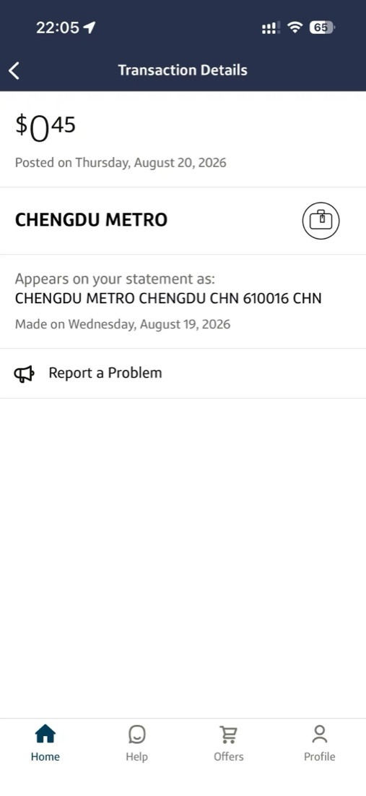
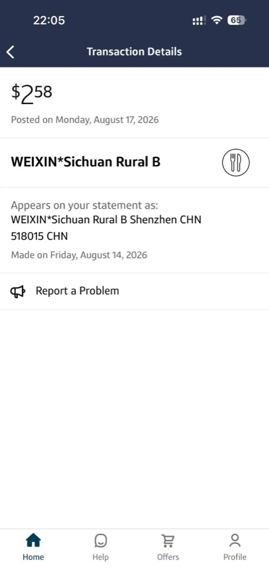
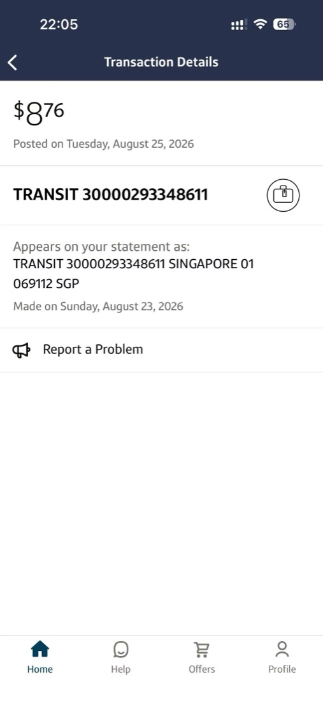
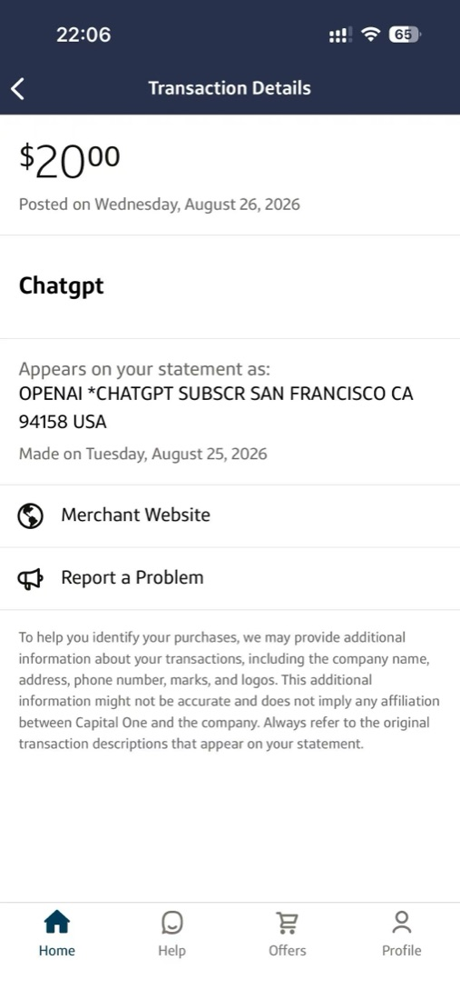

先说结果：这四笔交易都成功了，但它们在账单里的商户名称、币种转换和入账时间并不完全相同。
记录边界：这是我的四笔个人交易结果，不代表每一家商户、每一台终端或每一种支付方式都会接受这张卡，也不构成汇率或费用保证。

四笔交易先放在一起看
| 场景 | 支付方式 | 原始金额 | 正式入账 | 时间 |
|---|---|---|---|---|
| 成都地铁 | Apple Pay | 未保存 | $0.45 | 8 月 19 日消费，20 日 Posted |
| 微信消费 | 微信绑定卡 | ¥17.37 | $2.58 | 8 月 14 日消费，17 日 Posted |
| 新加坡交通卡充值 | Apple Pay | SGD 10 | $8.76 | 8 月 23 日充值，25 日 Posted |
| ChatGPT 订阅 | 自动扣款 | $20 | $20 | 8 月 25 日扣款，26 日 Posted |
第一笔：成都地铁用 Apple Pay 正常过闸
当时进站时，我用的是 Apple Pay 里的 Capital One Platinum。交易发生在 8 月 19 日，第二天变成 Posted，最终入账 0.45 美元，账单名称直接显示为 CHENGDU METRO。
这笔交易的原始人民币票价没有保存下来。我只记得大约是两三元，但既然原始数字不确定，就不应该拿 0.45 美元倒算一个看似精确的汇率。对我来说，这笔最有用的信息只有两个：闸机支付成功，之后也正常入账。

第二笔：微信支付 17.37 元，正式入账 2.58 美元
这次原始金额有记录：17.37 元人民币。付款时直接选择微信里绑定的 Capital One，正式入账金额为 2.58 美元。用 17.37 除以 2.58，得到约 6.73 元人民币兑 1 美元。
这个 6.73 只是这笔交易正式入账后的个人倒算结果，不是实时牌价，也不是 Capital One 对未来交易的汇率承诺。不同日期、商户、支付网络和计价方式都可能让结果变化。

为什么商户描述出现 Shenzhen
账单商户显示 WEIXIN 和 Sichuan Rural B，但描述中又出现 Shenzhen，而消费实际发生在四川。商户名称或地点有时可能反映支付平台、收单机构或处理通道，而不一定等于持卡人所在城市。
遇到这种情况，我会先对照微信付款记录里的日期和金额，再判断是哪一笔。如果交易确实是本人完成、时间和金额也能对应，名称差异就有了合理线索；但如果完全不认识这笔交易，不应仅凭商户描述猜测，而应立即按发卡机构的安全流程检查和报告。
第三笔：新加坡交通卡充值 10 新币，入账 8.76 美元
第三笔发生在新加坡。我在地铁站的充值机器上给交通卡充值 10 新币，使用的仍是 Apple Pay。交易在 8 月 23 日完成，8 月 25 日正式入账 8.76 美元，账单描述里可以看到 SINGAPORE。
如果只做除法，10 新币除以 8.76 美元，约等于 1 美元兑 1.14 新币。但我不会把它直接称为 Capital One 的汇率，因为交易经过充值机器、交通卡运营方和支付通道，中间是否存在其他计价环节，仅凭最终账单无法确认。
更准确的说法是：这次充值最后实际从信用卡账户入账 8.76 美元。以后遇到类似充值交易，我会拍下机器显示的原始金额，再等正式入账后一起比较。

第四笔：20 美元的 ChatGPT 自动订阅
第四笔最容易看懂。ChatGPT 每月订阅本来就是 20 美元计价，我把 Capital One 设为付款卡后，8 月 25 日自动扣款，第二天正式入账，原始价格和信用卡账单都是 20 美元。
因为没有人民币或新币转换为美元的过程，商户、金额和日期可以直接对应。和前面三笔相比，美元计价的美国网站订阅最直观。

没有境外交易手续费，不等于所有通道结果相同
Capital One 当前官方资料说明，Platinum 卡在美国以外使用时不收取境外交易手续费。这一点对跨境使用比较友好，但它只说明发卡行不额外收取这一类费用。
商户采用什么币种、是否经过钱包或充值通道、支付网络如何换算，以及终端或运营方是否有自己的费用，仍可能影响最终金额。因此，“没有境外交易手续费”不能推导成“每一种支付方式都会得到完全相同的结果”。
为什么要等 Pending 变成 Posted
Pending 表示交易已获得授权，但商户还没有完成最终处理；这个阶段的金额可能变化，也可能被撤销。Capital One 的帮助页面说明，信用卡交易通常会在约 72 小时内入账，有时可能需要更长时间。
因此，我复盘跨境交易时会以 Posted 后的最终金额为准。如果本人授权的交易有金额或服务问题，可以先与商户核对；如果交易根本不是本人或授权用户完成，应尽快联系发卡机构，不要等它自然消失。
查看 Capital One 对 Pending 交易的说明
我现在的首次使用检查方法
- 第一次在新地点或新支付通道使用时，先做一笔自己能够承担的小额真实消费；
- 保存小票、机器画面或付款记录，确认原始币种和金额；
- 记录消费日期，不用 Pending 金额提前下结论；
- 等待交易变成 Posted，再核对最终美元入账金额；
- 对照商户名称、日期和金额；无法识别的交易及时检查并报告。
总结
至少在我自己的四笔记录里，Capital One Platinum 已经完成成都地铁 Apple Pay、微信支付、新加坡交通卡充值和美元网站自动订阅。它能在这些场景里使用，但每一种支付通道的账单表现不完全相同。
真正有用的做法不是只问“能不能刷”，而是保存原始价格、等正式入账，再把支付通道、商户描述和最终金额放在一起复盘。四笔成功记录说明这些具体场景对我可行，但并不保证所有商户都接受，也不保证以后每笔交易获得相同的换算结果。
免责声明：本文仅为 Evan 的个人消费记录和信息整理，不构成金融、税务或法律建议，也不保证信用卡在任何地区、商户或支付通道都能使用。产品费用、支付规则和商户受理情况可能变化，请以发卡机构、支付平台、商户及本人账户显示为准。
前后篇
上一篇：申请 ITIN 和美国信用卡，到底值不值？我的真实成本账